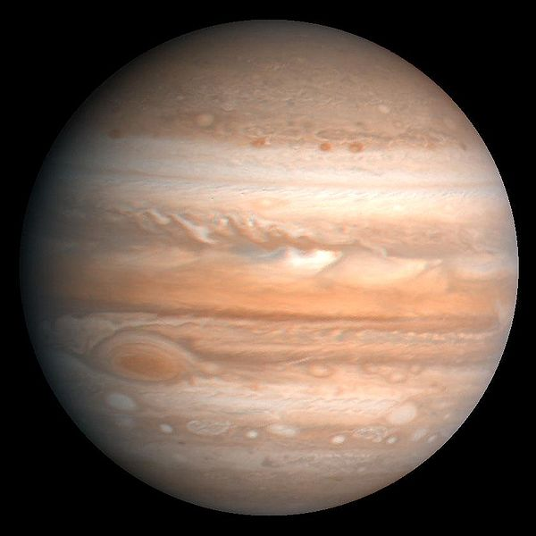
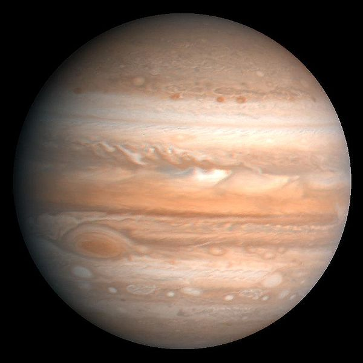

Sistema Solar
¿Qué es el Sistema Solar?
Los hombres de las antiguas civilizaciones desconocían la existencia del Sistema Solar y no comprendían muchas cosas más allá de la tierra donde estaban parados. El transcurso de los años les dotó de más experiencia y de una curiosidad engrandecida, por lo que empezaron a construir suposiciones, primero místicas, acerca de lo que veían en el cielo.
Para estos hombres primigenios no era difícil advertir fenómenos como los eclipses y la visión de otros planetas cercanos a la Tierra. El filósofo griego Aristarco de Samos sentó un precedente sobre la idea de un sistema basado en el Sol, pero fue Nicolás Copérnico quien desarrolló un sistema heliocéntrico, es decir, un modelo de cosmos con el Sol como estrella central y los planetas a su alrededor, totalmente contraria a la creencia en aquellos tiempos de que el Sol giraba alrededor de la Tierra. Un acontecimiento polémico en la historia que demoró mucho tiempo en aceptarse como verdadero.
Ahora ya sabemos que el Sistema Solar es un sistema planetario cuya estrella central es el Sol, alrededor del cual orbitan o giran varios planetas, planetas enanos y otros cuerpos celestes por efecto de la fuerza de gravedad. Los científicos calculan que el Sistema Solar se formó hace unos 4.6 billones de años debido a un colapso gravitatorio de una nube molecular gigante. Gran parte de la masa se concentró en el centro y dio forma al Sol, mientras que el resto de la materia originó a los planetas.
Los planetas del Sistema Solar
El Sol ejerce atracción gravitatoria sobre los cuerpos celestes, que son los 8 planetas, los planetas enanos, los asteroides, los cometas, los satélites naturales como la luna, las concentraciones de asteroides como el que divide a los planetas interiores de los exteriores y muchísimos objetos pequeños. Todo el sistema está contenido en la Vía Láctea, la galaxia con forma de espiral que a su vez forma parte del Universo.
En la antigüedad las personas observaron con una mezcla de asombro, curiosidad e interés puntos luminosos que parecían moverse entre las estrellas. Eventualmente nombraron “planetas” a los puntos, que en el griego πλανῆται (planētai) significa “vagabundo”.
Los primeros 4 planetas son los denominados planetas interiores o planetas terrestres, debido a su constitución sólida y rocosa: Mercurio, Venus, Tierra y Marte. Después de éste se encuentra el cinturón de asteroides tras el que se distribuyen los planetas jovianos o exteriores, constituidos por gas e identificados por su enorme volumen: Júpiter, Saturno, Urano y Neptuno.
Mercurio
Pocos saben que Mercurio es visible desde la Tierra sin binoculares, pero hay que saber en qué parte del día buscarlo. Es el segundo planeta más denso después de la Tierra y tan solo ligeramente más grande que nuestra Luna. ¿Hay calor en Mercurio? ¡Por supuesto! Pero también se caracteriza por sus temperaturas gélidas durante sus noches.
Venus
Si hablamos de planetas complejos, Venus es un buen ejemplo. A pesar de no estar tan cerca del Sol, concentra tanto calor que supera la temperatura de Mercurio. Posee numerosos volcanes y su atmósfera está constituida por gran cantidad de dióxido de carbono. A pesar de estar algo “cerca” de la Tierra, la vida en Venus es imposible hasta el momento.
Tierra
Nuestro perfecto hogar, la Tierra. Se formó hace 4,500 millones de años y es el único planeta hasta el momento, que alberga vida tal como la conocemos. Está conformada por un núcleo, manto y una corteza sólida de la que nacen enormes formaciones como volcanes y cordilleras, pero es sin duda, el agua el elemento que más prevalece al interior del globo.
Marte
El “planeta rojo” es uno de los planetas más explorados por el hombre. Marte es el segundo más pequeño del Sistema Solar y posee dos satélites naturales llamados Fobos y Deimos. Hasta el momento no se ha encontrado alguna forma de vida, pero sí cantidades importantes de agua en estado líquido.
Cinturón de asteroides
Al término de los cuatro planetas rocosos o telúricos, se encuentra el cinturón de asteroides, una zona entre las órbitas de Marte y Júpiter que reúne una enorme cantidad de pequeños cuerpos celestes conocidos como asteroides. Se cree que tales restos, provienen de un planeta que colisionó y se fragmentó hace millones de años.
Júpiter
El gran gigante gaseoso del Sistema Solar donde la vida es hasta ahora imposible. Júpiter se formó con los restos que quedaron tras la formación del Sol y por ello adquirió un gran tamaño, pero no el suficiente para convertirse en estrella. Alberga el océano más grande del Sistema Solar, aunque este no está constituido por agua.
Aunque otros planetas tienen anillos, Saturno posee los más sorprendentes. Es un planeta con un campo magnético 578 veces más potente que el de la Tierra, suficiente para mantener cerca a sus 53 satélites confirmados. Saturno ha sido explorado por el hombre, pero no a través de astronautas, sino de naves no tripuladas.
Urano
El tercer planeta más grande es Urano, el gran gaseoso azul que cuenta con 27 satélites naturales y un sistema de anillos más débil y menos visible que el de Saturno. Carece de una superficie sólida y su atmósfera es la más fría de todo el Sistema Solar, incluso más que la de Neptuno que está más lejos del Sol.
Neptuno
El último de los planetas del sistema planetario. Neptuno también cuenta con anillos, pero no se distinguen fácilmente por falta de luz solar. El planeta está formado básicamente de hielo y roca, y como gran gaseoso, su superficie no es sólida. Hidrógeno, helio y metano son los componentes de su atmósfera, suficiente para no poder albergar vida.

 
